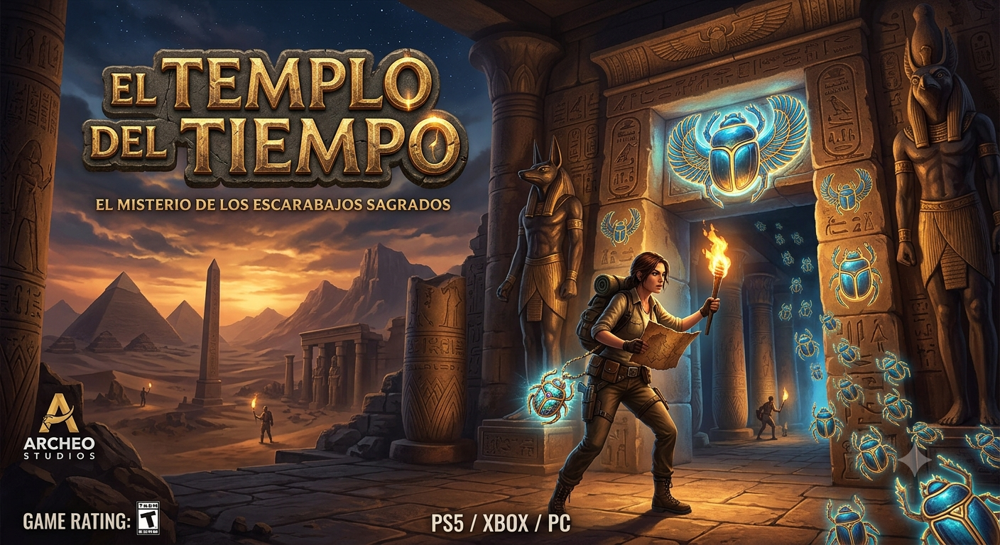
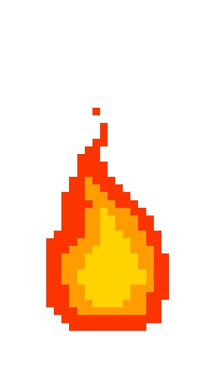
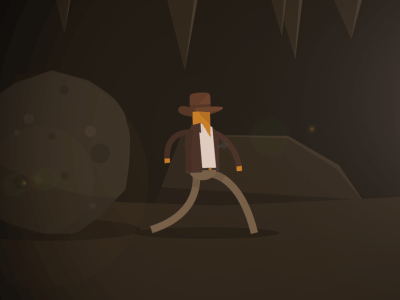

EL TEMPLO DEL TIEMPOAventura de Física & Proporcionalidad Directa
⚠️ Bitácora del Arqueólogo:
"Hemos cruzado el umbral del templo del sabio Amón-Fis. Tras nosotros, el enorme portón de granito se ha derrumbado. El aire comienza a escasear y las cámaras del templo colapsan a ritmo constante. Las inscripciones indican que solo entendiendo la constante del movimiento uniforme y la sagrada razón de proporcionalidad directa podremos desbloquear las salidas..."
💡 ¿Cómo funciona el MRU?
En el Movimiento Rectilíneo Uniforme, la velocidad es constante. Esto implica que la distancia (d) y el tiempo (t) son directamente proporcionales mediante la constante de velocidad: d = v · t.
El Altar de las Ofrendas Proporcionales
| Tiempo (segundos) | Distancia (metros) | Razón (d / t) = Velocidad |
|---|---|---|
| 2 s | 10 m | 5 m/s |
| 4 s | 20 m | 5 m/s |
| 8 s | Constante |
El Abismo de los Escarabajos de Lata
Un inmenso foso lleno de una horda de escarabajos de lata mecánicos te separa del otro lado. Una plataforma mágica se desplaza a velocidad constante esquivándolos. Los jeroglíficos dicen:
"Si la plataforma cruza 18 metros en 6 segundos... calcula cuántos metros recorrerá en un viaje continuo de 15 segundos para poder regular la pasarela."
El Mapa de las Constantes
Un proyector óptico del templo dibuja en el suelo arenoso un plano cartesiano. Muestra el avance (Distancia vs Tiempo) de un explorador que camina a velocidad constante. Encuentra la constante de proporcionalidad (la velocidad en m/s) calculando la pendiente de la recta para hallar la llave secreta.
El Laberinto de Espejos Gráficos
Tres rayos láser de color proyectan diferentes gráficas de proporcionalidad lineal. Solo una de las líneas representa el movimiento de un objeto con una velocidad constante de 4 m/s (es decir, avanza a razón de 4 metros por cada segundo). ¿De qué color es la línea correcta?

La Puerta de la Huida
¡Una roca gigante rueda hacia ti! La última losa de piedra de la salida se desliza hacia abajo. Está exactamente a 60 metros delante tuyo. Los sensores de peso calculan que el pasillo colapsará y la compuerta se cerrará herméticamente en exactamente 12 segundos.
Debes correr a una velocidad constante exacta para escapar de la roca y deslizarte justo a tiempo por la compuerta. Si vas más lento, quedarás atrapado. Si vas más rápido, chocarás contra el techo.

¡HAS ESCAPADO CON ÉXITO!
Te deslizas sobre la arenosa piedra justo cuando el portón sella el templo por completo tras de ti. Te pones en pie, sacudes tu sombrero de explorador y observas el desierto abierto.
Tiempo restante en el cronómetro de la tumba: 00:00
Gracias a tus conocimientos de proporcionalidad directa, gráficos de movimiento y Movimiento Rectilíneo Uniforme (MRU), has demostrado ser un maestro de las variables y el espacio.